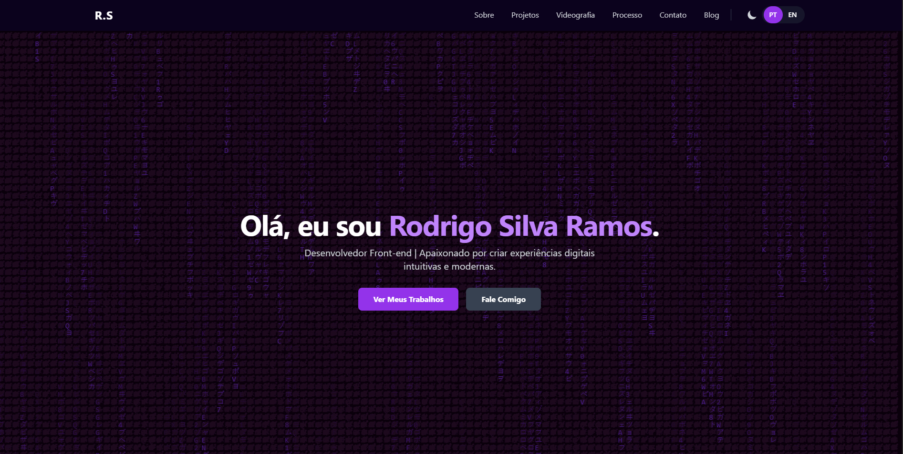

Por que Escolhi um Site Estático para Meu Portfólio
Publicado em 29 de Junho de 2025 • Leitura de 5 min
Ao planejar um novo site, uma das primeiras decisões técnicas é a escolha da plataforma. Muitos caminhos levam a sistemas de gerenciamento de conteúdo (CMS) como o WordPress, ferramentas incrivelmente poderosas. Mas e se para um portfólio, a abordagem mais simples e 'clássica' fosse, na verdade, a mais moderna e eficiente?
Neste artigo, vou explicar por que tomei a decisão consciente de construir meu portfólio do zero, usando apenas HTML, CSS e JavaScript puros — uma abordagem conhecida como site estático. Vou detalhar as duas principais vantagens que me levaram a essa escolha: performance incomparável e segurança robusta.
1. Estático vs. Dinâmico (A Analogia do Livro e do Chef)
Site Estático (O Livro Impresso): Pense em um site estático como um livro impresso. Cada página já está pronta, completa e esperando na prateleira (o servidor). Quando você pede para vê-la (acessa o link), o servidor simplesmente te entrega a página pronta. É direto, rápido e não há processamento no momento da entrega.
Site Dinâmico - WordPress (O Chef Robô): Já um site dinâmico, como um feito em WordPress, é como um chef robô com um livro de receitas e uma despensa gigante (o banco de dados). Quando você pede um prato (visita uma página), o robô precisa ir até a despensa, pegar os ingredientes (textos, imagens), consultar o livro de receitas (o código PHP), montar o prato na hora e só então te servir. Esse processo acontece a cada visita.
2. Vantagem #1 - Performance Incomparável
Na web, velocidade é fundamental. Um site lento frustra o visitante e é penalizado pelo Google. Como um site estático é o 'livro impresso', não há tempo de espera para o 'chef robô' preparar o prato. O servidor localiza o arquivo HTML pronto e o envia imediatamente. O resultado é um carregamento quase instantâneo.
O tempo de carregamento ultrarrápido do meu portfólio e a fluidez das animações que você vê são um resultado direto dessa escolha pela simplicidade e eficiência da arquitetura estática.
3. Vantagem #2 - Segurança Robusta
A complexidade de um site dinâmico, com seu servidor de aplicação, banco de dados e ecossistema de plugins, cria múltiplas 'portas' que podem ser atacadas. O WordPress, por ser a plataforma mais popular do mundo, é também o alvo número um de hackers que buscam explorar vulnerabilidades.
Um site estático, por outro lado, não tem um banco de dados para ser invadido ou código complexo no servidor para ser explorado. Ele é, na sua essência, apenas uma coleção de arquivos de texto. Sua 'superfície de ataque' é drasticamente menor, tornando-o inerentemente mais seguro e muito menos propenso a problemas.
4. Outros Benefícios (Bônus)
Hospedagem e Custo: Hospedar arquivos estáticos é muito mais barato e, em muitos casos, gratuito. Plataformas como Netlify, Vercel e GitHub Pages oferecem planos gratuitos robustos para esse tipo de site.
Controle Total: Construir do zero me deu controle absoluto sobre cada pixel e cada linha de código, permitindo-me criar as funcionalidades e animações exatas que eu queria, sem as limitações de um tema ou plugin pré-pronto.
Conclusão
Embora plataformas como o WordPress sejam ferramentas fantásticas para muitos cenários, como grandes portais de notícias ou e-commerces, para um portfólio pessoal, onde o objetivo é mostrar meu trabalho com a máxima performance e segurança, a escolha por um site estático foi clara e estratégica. Essa abordagem não reflete apenas uma decisão técnica, mas uma filosofia de trabalho que aplico em tudo que faço: focar no essencial, otimizar a experiência e ter controle total sobre o ofício — seja escrevendo código ou editando um vídeo.